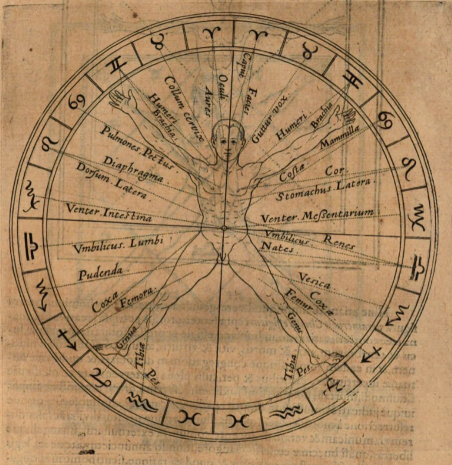

Game-mechanics
The Four Tempraments
The main attributes of each playing character in Sprezzatura represents four approaches called Temperaments, inspired by Renaissance and Medieval theories categorizing people's personality and physiological traits. For each Challenge(Check), the player will describe their PC's action that will lead the Gathering(Table) to an agreement: the chosen character's approach.1
- Choleric (Fire): associated with creativity and passion.
- Phlegmatic (Water): associated with empathy and adaptivity.
- Sanguine (Air): associated with reason and wit.
- Melancholic (Earth): associated with tradition and care.
A playing character in Sprezzatura will have an amount of 6-sided dices (d6s) associated to each Temperament, reflecting their predisposition to the given approach. Each Temperament's value ranges from 2 (weak) to 5 (legendary) d6s.
Example
Nicholas' playing character Guidobaldo Strozzi is an Italian merchant from Venice, who climbed the social ladder with his wealth and lack of emphaty. He has a silver tongue, a passionate soul and no respect for tradition and etiquette. His Temperaments values are:
| Temperament | Value |
|---|---|
| Choleric | 3 |
| Phlegmatic | 3 |
| Sanguine | 4 |
| Melancholic | 2 |
The Resonance System
The search for symphatetic resonances, unity of opposites and the universal language was an obsession shared by many thinkers and occultists of the Renaissance. Inspired by the principal Pythagorean musical proportions of the - unison (1:1) - octave (2:1) - fifth and its complementary fourth (3:2 and 4:3) - major intervals of the third, sixth and tenth (respectively 5:4, 5:3 and 5:2)
I have designed a dice-poll system where successes are collected by pairing dice to achieve consonant proportions.
Here a table describing all possible pairings given two d6s:
| d6 x d6 | 1 | 2 | 3 | 4 | 5 | 6 |
|---|---|---|---|---|---|---|
| 1 | unison | octave | ||||
| 2 | octave | unison | fifth | octave | maj. tenth | |
| 3 | fifth | unison | fourth | maj. sixth | octave | |
| 4 | octave | fourth | unison | maj. third | fifth | |
| 5 | maj. tenth | maj. sixth | maj. third | unison | ||
| 6 | octave | fifth | unison |
As you would notice, there are 6 possibilities for unison (corresponding to the diagonal of the matrix), 6 for octaves (when the ratio between two values gives 2), 6 for fifth and fourth and 6 for major third and sixth. Each of the four categories is equiprobable, and counted toegther gives a total probability of success of 24/36 = 66 %.
Consonances
Each of the aforementioned paires of dice generates a Consonance that can be exchanged by a player for a succces. Later on, we will see how it is possible to increase the number of consonances by borrowing dice from the Resonance Poll or by playing a Minor or Major Arcana.
Each Temperament has a favorite type of Consonance associated with it.
- Choleric resonates the most with passions, reflected by the colorful consonances of major third, sixth and tenth.
- Phlegmatic resonates the most with the purity of the unison consonance.
- Sanguine resonates with the creative impulse of the fifth and fourth consonances.
- Melancholic resonates with the stability and depth of the octave consonance.
Player are encouraged to seek consonance pairs in their dice poll that resonates with the chosen Temprament for the roll. If the majority of consonances aligns with the Temperament resonance, than the player grants a bonus.2
Resonance Poll
Many tabletop role-playing games are turn-based, providing few mechanics for other players to interact with the active player taking actions. In Sprezzatura I have introduced an interesting help mechanics called the Resonance Poll.
Each time a player rolls for a challenge, their can "keep" up to one unused die from the poll and save it. During the same scene, other players can require extra dice from the Resonance Poll involving their owners in the current challenge. In this way, the owners can actively contribute to the active player's action, keeping the out-of-turn attention of players high.
Example
Nicholas' character Guidobaldo is involved in a challange, trying to impress some local nobles at a party. He is rolling with his Sanguine Temprament of 3 and he rolls a 1,2,5. He can combine (5,2) to generate a major tenth Consonance, but he needs two successes to achieve his character's goal. Lidwien has a 2 on her Resonance Poll and suggestes to include her character Moderata in the challenge in exchange for the die.
Dissonances
Special combinations of dice generates Dissonances. Those unpleasant sounds are represented in Sprezzatura by values of 7,11 and 13. As long as the player rolls only dice from a character's Temperament, Dissonances can not be generated. The only way to create Dissonance is by playing Minor Arcanas or Major Arcana (see next section).
A Dissonance always cleans every player's Resonance Poll and generates a negative twist into the character's life. It can be a short or a long-term consequence, the player who played the Dissonance might choose.
In exceptional cases, a player may play a Dissonance card on their character. Their challenge has failed narratively, but instead of rolling Falire dice on the Goose Game they might choose to reposition their pawn up to twice the number of successes of their curent roll. More information about the Goose Game in its dedicated section.
Clocks

Inspired by Forged in the Dark games and Dungeon World Fronts I have decided to represent every kind of Opposition facing the players, either abstract or concrete, into Clocks. The magnitude of each Opposition is proportional to the number of ticks of their associated clock. The more ticks, the harded will be for the players to face the challange.
| Magnitude | Number of Ticks |
|---|---|
| Trivial | 2 |
| Simple | 4 |
| Complex | 6 |
| Challenging | 8 |
| Legendary | 10 |
Position and Effect
Every challange arises when the story encounters a moment of uncertainty, and the players leave the final decison to dice. I am considering the Position and Effect matrix from Forged in the Dark games to organise degrees of success according to the shared fictional state.
A character's Position indicates their advantage with respect of the situation. It can be Desperate, Standard or Controlled.
| Position | Desperate | Standard | Controlled |
|---|---|---|---|
| Successes needed | 3+ | 2+ | 1+ |
On a similar fashion, a character's Effect measures the impact of their action. It can be Limited, Standard or Great.
| Effect | Limited | Standard | Great |
|---|---|---|---|
| Clock's ticks | 1 | 2 | 4 |
Here comes a 3x3 matrix describing Position and Effect combinations
Aspects & Minor Arcana
Each character starts the game with three Aspects representing their Past (Background), Present (Bonds) and Future (Drives). These Aspects should be assigned collaboratively during Session 0 and can reflect any kind of emotion and relationship, either positive or negative. During Scenes, characters can invoke one of their Aspects during a challenge to spend one of their Minor Arcana cards in their hand. The numerical value of the card will be added to the player's poll and can be conbined with any die to generate a Consonance, increasing the amount of successes, or even a Dissonance.
Major Arcana
Major Arcana cards are powerful emblematic symbols that will dictate the mood of each Scene, or Canto. The player placing the last Major Arcana on the table is designed as temporary Game Master and they are responsible to describe the content of the Scene to the fellow player, in a short an coincise Description, or Argomento. Furthermore, each Major Arcana card temporarily influence the game-mechanics with some alternative rules. More information about in the dedicated section.
At the beginning of a Session, usually is the player with the highest Station value on the Goose Game may place a Major Arcana for the first Scene. If they have no Major Arcana on their hand, the next player on their left may play a card and be designated ad Game Master. The subsequent Scenes are played similarly, but now just following clockwise order.
The Royal Game of the Goose
-
Mechanics where attributes are based on approaches, rather than descriptive physical or mental talents are inspired by Legend of the Five Rings 5th Edition and Fate Accelerated. ↩
-
TO-DO: Bonus for Temperament resonance to be defined. ↩